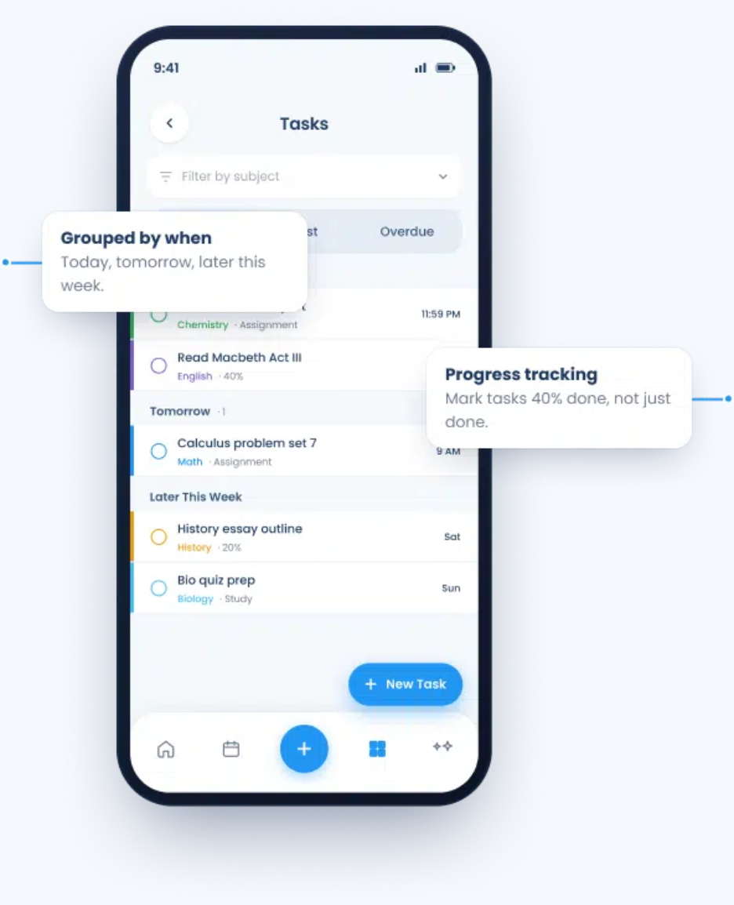
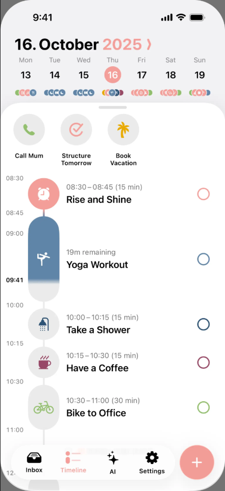

前端复用
React + TypeScript + Vite，共用业务组件，分别适配手机和电脑。
已确认：手机可安装，同时保留电脑网页。浅灰背景、白色时间轴与列表、少量课程色已确认。以下是参考与交互建议，新首页尚未实施。
借鉴项目级总览：每份 coursework 占一行，细分步骤放到详情中；在同一时间坐标上看日期与进度。



参考产品如何组织信息；可复用源码选开源组件。以上产品界面不等于可下载的内部前端源码。
| 组件 | 用于我们的首页 | 官方入口 |
|---|---|---|
| Progress | 学期时间、作业步骤的完成比例；分别标注含义 | shadcn Progress |
| Drawer / Sheet | 手机底部作业详情、电脑侧面详情 | shadcn Drawer |
| Tabs / Select | 课程筛选；学期与本月的时间范围切换 | Radix Tabs |
| 自定义时间轴 | 课程分组、任务条、今天标线、里程碑 | React + CSS / SVG；业务逻辑自行实现 |
实施时统一选择一套底层组件体系；此处列的是备选来源，不是要求把全部组件库一起安装。
React + TypeScript + Vite，共用业务组件，分别适配手机和电脑。
Capacitor 接入现有前端，生成 iOS / Android 工程；需要另外完成打包和真机验证。
App 通过 HTTPS 接入组员后端。电脑上的 localhost、密钥和数据库不会自动进入手机。
本轮只清理旧演示、调研设计；没有创建原生工程、真机安装、上线 App 或认定视觉方案已获确认。